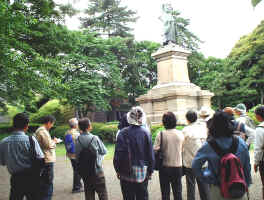
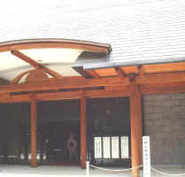

|
|
大江橋付近 |
| 見たい項目をクリックして下さい | |||||||||
|
| 行 事 記 録 （詳 細 - ３） |
| 野毛山散策 |
| 掲載日 ０３−６−２ |
|
行 事 名 |
野毛山散策 |
|
研 究 部 会 |
横浜探訪の会（代表竹内、小方） |
|
実 施 日 |
０３年５月２５日（日） |
|
実 施 場 所 |
ＪＲ桜木町駅より、掃部山、伊勢山、野毛山地区 |
|
参 加 者 数 |
会員１５、非会員７ （合計２２） |
| 記 録 | 石田 |
|
概 要 |
0930ＪＲ桜木町駅に集合→駅周辺の鉄道発祥の碑など→陸橋で国道１６号を横切って花咲き町に入る→音楽通り（ガス事業発祥の地）→紅葉坂（金星観測記念碑、奉行所跡）→掃部山公園→横浜能楽堂→伊勢山皇大神宮→成田山横浜別院→十全医院跡→野毛山公園（豪商庭園跡、佐久間象山碑、配水池、近代水道発祥の地など）→横浜税関長官舎跡→日ノ出町駅から数分の長谷川伸生誕の記念碑 須田会員の案内でゆっくりと約4時間の散策を満喫しました。 暑くも無く、寒くもない穏やかな絶好の日よりで、各ポイントでの須田会員の判りやすく、興味をそそる説明のお陰で、結構長時間の行程を全然疲労感なく楽しみました。1330解散の後、有志16名で美味しいギョウザで有名な「万里」で昼食,・歓談、これまた楽しい一時でした。 |
| 桜木町駅と周辺 |
|
JR駅庁舎天窓には動輪をもした鉄道のモチ−フがあり、野毛方面近道地下道の入口の柱には開業当初の横浜駅長室跡を示す銘板が嵌め込まれており、裏手には零標点のマーク、鉄道発祥の地を示す記念碑があり、そこには新橋〜横浜間に開通した際の運賃、時刻標、横浜駅の様子等が記されている。また駅近くを流れる大岡川に掛かる大江橋付近は、その上に根岸線の鉄橋がかかり一方川の 下には高速道路と市営地下鉄3号線が走るといった珍しい多層構造になっている事、 かっては桜川だったところも今では桜川新道となっていること等は説明を聞かないとなかなか気が付かないものだ。 |
|
|
大江橋付近 |
| ガス事業発祥の地 |
| 現在横浜市立本町小学校が建つ場所が明治3年高島嘉右衛門により日本最初のガス会社が設立された所で、それを記念するガス灯と碑が立っている、碑文には明治５年に大江橋、馬車道、本町通りまで十数基のガス灯が灯ったとある。高島嘉右衛門は一時期刑務所に入ったが出所後建築請負業で財を成した、晩年は易学を研究有名な高島易断創始者でもある、また横浜ガス局から排出されるコークスの払い下げをうけ東京深川のセメント工場に燃料として売り巨利を得たり、明治12年横浜市の６３ｹ所に公衆便所を建設、肥尿を百姓に売って儲け、更に明治１４年コレラ流行を防ぐ為 コールタールを消毒用石炭酸原料としてうり産業廃棄物利用で産を成した浅野惣一郎のエピソードは現代にも通じる話である。彼は後に浅野セメントを起こし、学校も設立した。 |
|
|
昭和５９年東京ガスから寄贈された碑 |
| 金星観測記念碑・奉行所跡 |
| 明治７年１２月金星が太陽面を通過した際メキシコ隊がここで観測した（日本隊は少し離れたところで観測した）ことをを記す記念碑で、昭和４９年１２月に観測１００年を記念して金星太陽面通過観測記念碑設立期成会により作られた。メキシコ隊、日本隊の観測位置が記されている。並んで奉行役所跡の碑があるが、説明には安政６年（１８５９年）横浜開港により外国奉行は神奈川奉行兼務となり青木町に会所、戸部村宮ｹ崎に奉行役所を置き、横浜村に運上所をおいて事務に当たらせたが、この地にあった奉行役所は戸部奉行役所と呼ばれ国内司法･行政事務をとり扱ったとある。後神奈川奉行所は廃止され、明治３年神奈川県庁と改称された。 |
|
|
|
| 掃部山公園 |
| 明治４２年横浜開港５０年を記念して旧彦根藩有志が旧藩主の開港功績を顕彰のため大老井伊掃部頭直弼の銅像を建立して,その地を掃部山と名づけ記念した。その後銅像は戦時の金属回収で供出されたが昭和２９年再建された。なお台座と水飲み施設は当時のものである。因みに像の高さは３．６メートル、重さは約４トンある。 |
|
 |
|
| 横浜能楽堂 |
|
公演のない時は自由に入って堂内を見学できニ階客席に座って説明が聞けた、本舞台は明治８年加賀藩主・前田齋泰の隠居所の一角に建てられたもので鏡板には通常の豪壮な老松ではなく華奢な松に白梅が配されています。客席は正面２００席のほか脇席、中席、ニ階席を加え４８６席。堂内に展示されている写真パネルや能衣装等（撮影禁止）は豪華でなかなかのものでした。 |
|
|
 |
| 伊勢山皇大神宮 |
| 明治６年神奈川県知事井関盛良らにより新興横浜の総鎮守とするべく近くの神明社を現在地に奉遷しこの地を伊勢山と改称、その後当宮を伊勢神宮の遥拝所となし、それに相応しい規模に整備され正遷宮された。例祭日は５月１５日、関東大震災で倒壊したが昭和３年に復興された。 参道には犬養孝博士の万葉歌碑がありボタンを押すと歌会と同じ朗詠が聞ける様になっている、また２次大戦の日本に対する賠償要求を放棄した蒋介石の頌徳碑がある。 |
|
|
|
| 成田山横浜別院 |
| 本尊は不動明王。明治３年本山成田山新勝寺より分霊して普門院境内に設立された遥拝所が明治９年現在地に移り成田山教会となり、その後明治２６年本山塔頭より寺号を転じて延命院と号した。境内には六地蔵尊、明治３６年建立の船員追悼の碑などがある。また崖下には修行の場水行堂等がある。 |
|
|
|
| 特徴ある石垣と十全医院跡 |
| 横浜は坂が多くあちこちで石垣が築かれており、この日の散策でも特徴のある、見た目が綺麗な「切積」石垣（伊勢山）と振動に強い「亀甲」積石垣（野毛坂入口）が確認できました。老松中学校の片隅に十全医院跡を示す礎石はあり、ここで戊辰戦争で会津、官軍双方の負傷者を治療した英国医師ウイリアム・ウイリスのエピソードを聞きました。十全医院は明治４年に早矢仕有的らの意見により北仲通りの仮病院として開業明治６年に老松松に移り横浜共立病院と称したが明治７年十全医院と改称。のち明治２４年に神奈川県から横浜市に移管された。関東大震災では全焼、その後昭和元年に浦舟町に移転、新築されて現在の市民病院となった。 |
切積の石垣 |
亀甲積の石垣 |
十全医院跡を示す礎石 |
| 野 毛 山 公 園 |
| 野毛山公園は現在市立総合公園で,標高５０メートル前後の丘陵地にあり、用地は明治の豪商茂木惣兵衛、原善三郎の庭園に旧野毛山配水池を併せて大正１５年９月に開園、その後昭和２６年に動物園ができ、緑地や遊園地を含む面積は約９．７ヘクタール。散策では明治の豪商の遺徳を偲びつつ、開港の先覚者佐久間象山の碑、近代水道発祥の地碑、横浜近代水道の設計者ヘンリー・Ｓ・パーマーの胸像を訪ね両者の業績などいろいろと説明をうけた。 この後展望台にあがり周囲の景観を楽しんだ。 |
|
|
|
|
| 横浜税関長官跡と 長谷川伸生誕の地記念碑 |
| 現在の西区老松町２１番地にかって税関の官舎があり、有島三兄弟の父上が税関長として住み、東京生まれの（下の二人は横浜で生まれた） 長男武郎はここから横浜のミッションスクールに通い西洋風の教育を受けたとのこと、併し現在は全くの別人が住み当時の面影を残すものはなく残念でした。 ついで狭い坂道を下り、坂の道端に立つ吉田新田の吉田勧兵衛の顕業碑を観て京急日ノ出町駅から数分の「一本刀土俵入り」、「瞼の母」、 「沓掛の時次郎」などの著者長谷川 伸生誕の碑を訪ね最後の説明を聞いて散策は終了した。 |
|
|
|
| その他並びに所見 |
| 散策コースにはまだいろいろと歴史的事実を有する場所が有り、紅葉坂の「天下の糸平」と言われ、後年東京でも活躍した田中平八の屋敷跡、石炭置場跡、能楽堂近くの茶で財を成した大谷嘉兵衛の屋敷跡、切通しを開くため何度も掘った話、野毛の平沼銀行を創立した平沼専蔵屋敷跡、野毛公園に建つラジオ塔等についても説明があり面白く、日頃よく通ったり、訪ねている所にもまだまだ知らない歴史的事実が隠されているものだと痛感した次第です。最後にこれは本当に偶々でしょうが青少年センター内の紅葉ｹ丘遺跡調査の現場に行き当たりました。弥生時代の竪穴住居の跡だそうですが、現場からは縄文土器、そして神奈川奉行所だった所でもあるせいか当時使われた多くの陶磁器類も出土しているとのことでした。歴史ボランティアグループに相応しい偶然と言えるでしょう。 |
| 記録の一覧表 に戻る |